最全Pycharm教程（4）——有关Python解释器的相关配置
最全Pycharm教程（6）——将Pycharm作为Vim编辑器使用
最全Pycharm教程（8）——Django工程的创建和管理
最全Pycharm教程（9）——创建并运行一个基本的Python测试程序
1、准备工作
（1）Pycharm版本为3.0或者更高版本
（2）至少安装了一个Python解释器并且已经正确配置
（3）已经创建了一个Python工程
2、主要内容
介绍如何通过Pycharm来调试脚本文件，以及各个工具按钮的作用等等，至于Python编程方法，请参见Python documentation。
3、待复习知识
为了完成本篇教程的内容，需要用到前面的两个重要知识点：
（1）Run/debug配置文件的相关知识
（2）断点的相关知识
4、Run/debug 配置知识
每当你通过Pycharm来运行或者调试一个脚本文件时，都需要一个特殊的文件来记录脚本的名称、工作目录以及其他的重要调试信息。Pycharm已经针对特定模式预先创建好了配置文件，避免我们手动去创建。
每次你单击运行或者调试按钮时（或者通过快捷菜单执行相同的操作），我们实际上都是在当前工作模式中加载了对应的配置文件。详见product documentation。
5、断点
一个断点标记了一个代码行，当Pycharm运行到该行代码时会将程序暂时挂起。Pycharm提供了几种形式的断点 types of breakpoints，其图标 icon各不相同。详见 product documentation中的Breakpoints tutorial。
6、实例
在你的Python工程中，创建一个新的Python文件，命名为ThreadSample.py，然后输入以下代码：
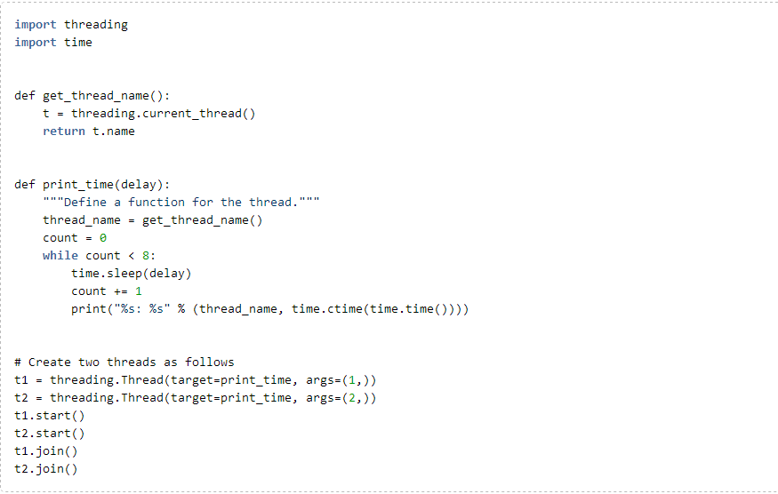
7、设置断点
首先，在源码中设置断点。通过单击代码左侧的空白槽来在对应位置生成断点：
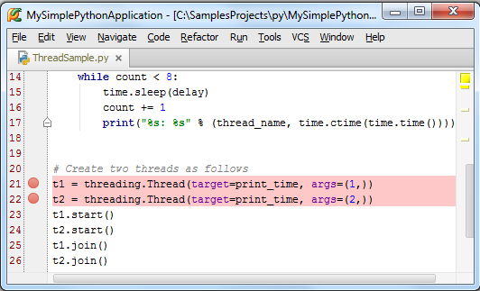
8、开始调试
选择 run/debug configuration "ThreadSample"，然后按下Shift+F9（或者单击工具栏中的绿色蜘蛛形式的按钮），调试开始，并在第一个断点处停止：
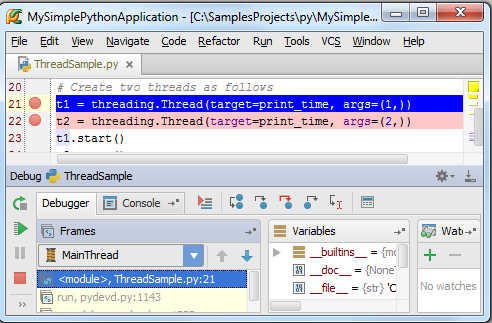
断点所在的行变为蓝色，说明Pycharm已经击中了这个断点，但尚未执行这行代码。
9、更改调试窗口的布局
此时Pycharm进入调试界面模式Debug tool window，各个控件的具体功能详见know how to use this tool window。
加入你并不喜欢当前的默认布局，例如你希望将调试器输出窗口作为一个独立的窗口显示以便更方便的观察当前的调试状态，你可以对布局进行个性化定制。
首先，我们先把调试工具窗口独立出来，只需要右击窗口的标题栏，然后选择Floating mode：
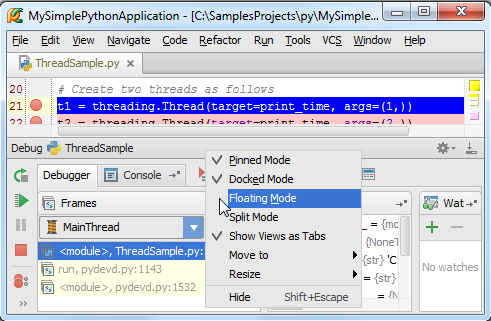
接下来将控制台窗口移动成为一个独立的窗口，只需要拖动控制台窗口将其拖出测试窗口即可：
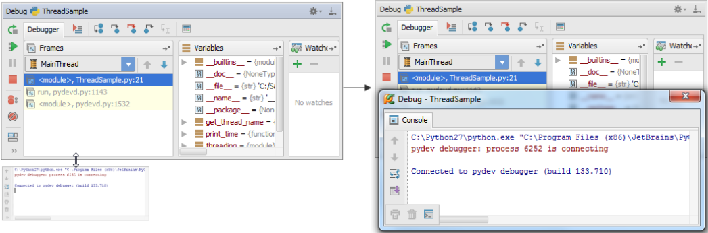
可以通过单击工具栏上的按钮来恢复到默认布局。
更多信息请参见PyCharm Tool Windows和Moving tabs and area
10、添加一个变量查看器
接下来我们介绍如何在调试过程中观察变量的状态。我们需要对其设置一个查看器。在Watches窗口中，单击绿色的加号，输入期望查看的变量名称，例如这里输入delay，然后回车。当然你也可以采用另外一种方式：在编辑窗口中右击变量名，在快捷菜单中选择Add to watches：
此时观察Watches窗口，发现delay变量目前尚未定义：
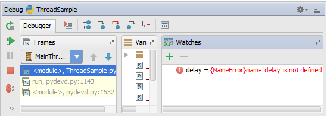
稍后你将会看到如何对这个变量进行负值，以及其在watches窗口中的变化。接下来我们为get_thread_name()函数设置一个查看器作为练习。
11、浏览帧
此时你能看到一个名为MainThread的进程，其中包含三帧。单击每一帧来显示其变量状态以及相对应的py文件，同时会对有问题的代码行以高亮显示：
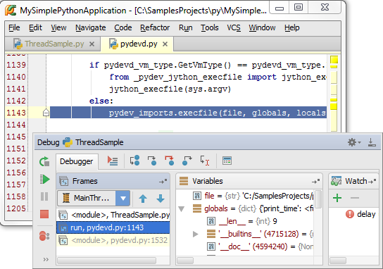
12、简单的调试
在每个断点出都单击按钮来时程序继续运行，观察控制台的脚本输出：
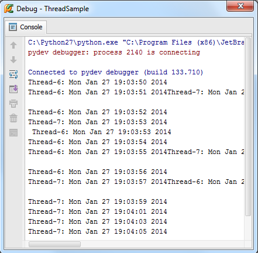
13、步进式脚本调试
让我们对当前脚本进行进一步的调试。单击重启调试进程，程序再次运行到第一个断点处并暂停。
在调试窗口的顶端，你会看到一列包含步进调试按钮的工具栏 stepping buttons。
单击，或者按下F8，你会发现蓝色标记移动到了下一行：
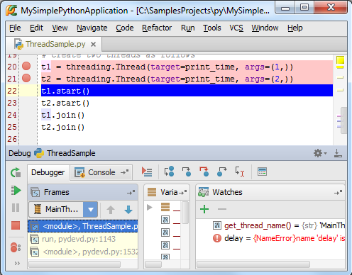
与此同时，当你暂停了脚本执行时（单击按钮），你能看到高亮表示的函数print_time（），你可以选择其中的任何一个进程，并观察变量的变化：
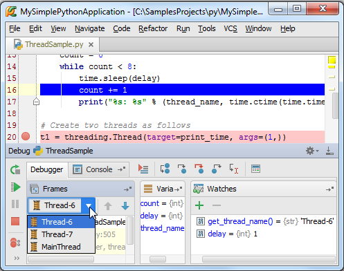
14、运行到当前光标处
假如你不想加入断点，但仍希望代码能够调试运行到某一指定的代码行，如何操作？
返回调试界面的第二个断点处，在对应行插入输入光标。
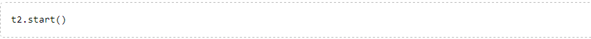
单击按钮，或者按下Alt+F9快捷键，该行代码变为高亮显示：
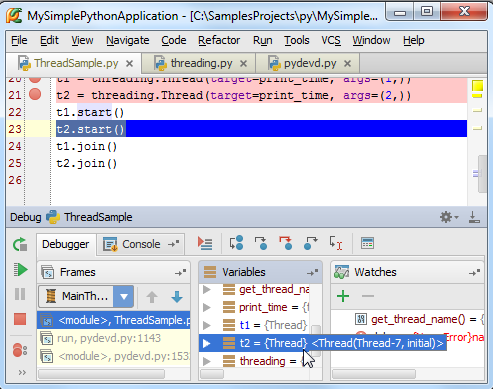
15、如何调用Debug命令
值得一提的是所有的调试操作不仅仅可以通过调试工具栏的对应按钮来完成，还可以通过主菜单中Run菜单下的命令来实现，以及相关的快捷菜单项。下面给出一些常用的调试菜单命令及其对应的快捷键列表：
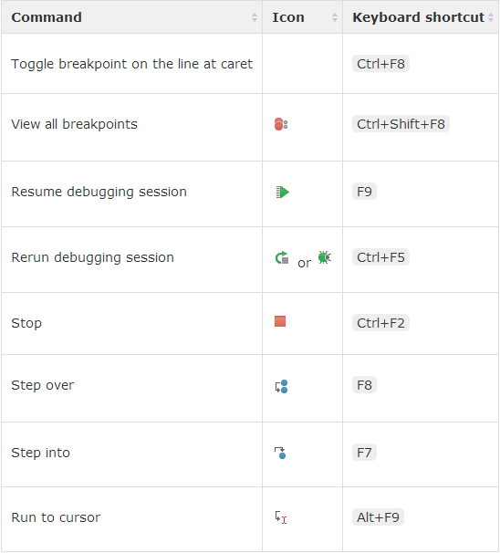
更多控件描述参见Debug tool window。